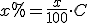
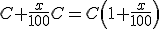
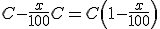
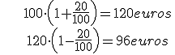
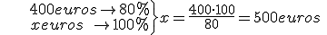

Matemática financiera
Aumentos y disminuciones porcentuales
Para calcular un porcentaje, x, de una cantidad

Si se expresa en forma decimal es el tanto por uno.
Para aumentar o disminuir una cantidad C en un porcentaje usamos una regla de tres o las siguientes fórmulas:
- aumento

- disminución

Ejemplos:
1.-Un traje que subió un 20% la semana pasada hoy lo han rebajado un 20%. ¿Cuesta lo mismo?
 No cuesta lo mismo
2.- He pagado 400 € por un televisor que estaba rebajado un 20%. ¿Cuánto costaba antes de la rebaja?
 Costaba 500 euros sin rebajar
Ejercicio. En el día sin IVA me he comprado un televisor por 553 €. Si el descuento de este día es del 21%, ¿cuánto costaba el televisor antes de la rebaja? ¿Cuánto me hubiera costado si de verdad me hubieran rebajado el IVA?
Soluciones: 700 €; 578,51 €
Obra publicada con Licencia Creative Commons Reconocimiento No comercial Compartir igual 4.0